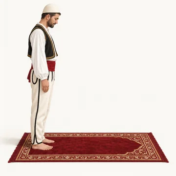
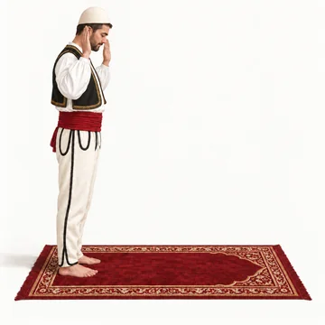
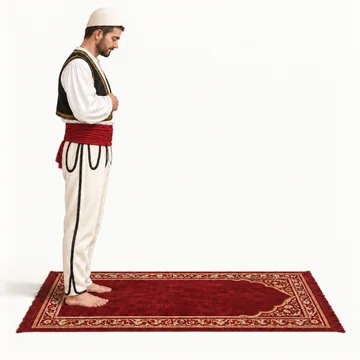
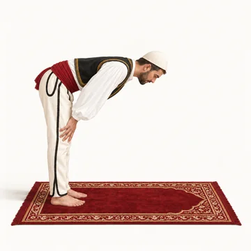
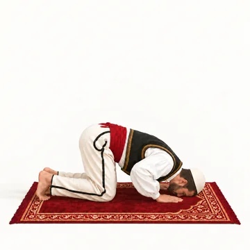
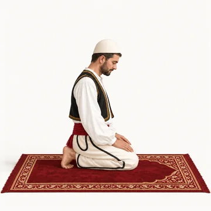
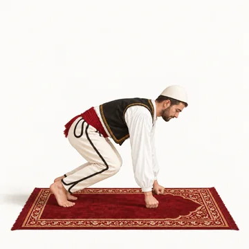

How to pray
Step by step, the prayer of the Prophet ﷺ. Read what the body does and what you say at every step.
Before you pray
- 1Has the prayer time begun? Check the prayer times for your city.
- 2You have wudu (see below). After janabah, menstruation or postnatal bleeding you need ghusl.
- 3Your body, your clothes and the place where you pray are clean.
- 4You are covered: a man from the navel to the knee, a woman her whole body except the face and hands.
- 5Face the qiblah (the Ka‘bah in Makkah).
- 6Make the intention in your heart.
Wudu (ablution)
Without wudu the prayer is not valid. Use clean water. The number shows how many times: 3 times is the Sunnah, once is enough. Wash the right arm and the right foot first.
Always in this order, from 1 to 9, without a long break in between.
- 1
Intention and Bismillah
Intend in your heart to purify yourself. Say: Bismillah (in the name of Allah).
- 2
Hands 3×
Wash your hands up to the wrists.
- 3
Mouth 3×
Take water into your mouth, swirl it around and spit it out.
- 4
Nose 3×
Sniff a little water into your nose and blow it out with your left hand.
- 5
Face 3×
From the hairline down to under the chin, and from ear to ear.
- 6
Arms 3×
From the fingertips up to the elbows. First the right, then the left.
- 7
Head 1×
With hands wet with fresh water, wipe your head from the front to the nape and back again.
- 8
Ears 1×
Index fingers inside the ears, thumbs behind the ears.
- 9
Feet 3×
Up to the ankles. First the right, then the left.
After wudu you say:
أشهد أن لا إله إلا الله وحده لا شريك له، وأشهد أن محمدا عبده ورسوله
Ash-hadu an la ilaha ill-Allah wahdahu la sharika lah, wa ash-hadu anna Muhammadan ‘abduhu wa rasuluhu
Meaning: I bear witness that there is no god but Allah alone, with no partner, and I bear witness that Muhammad is His slave and Messenger.
You may add:
اللهم اجعلني من التوابين واجعلني من المتطهرين
Allahumma ij‘alni min al-tawwabina wa’j‘alni min al-mutatahhirin
Meaning: O Allah, make me one of those who repent and one of those who purify themselves.
A woman wipes her hair, loose or braided, from the front of the head to the nape. She does not need to wipe its whole length. Otherwise wudu is the same for men and women.
When do you need a new wudu?
- Anything that comes out of the two passages: urine, stool and wind.
- Deep sleep, when you would not notice if something came out. Light sleep does not break it.
- Losing consciousness, for example fainting.
- Touching the private part with the hand, with desire.
- Eating camel meat.
In doubt? Then your wudu is still valid.
Touching a woman does not break wudu, as long as nothing comes out.
After janabah, menstruation or postnatal bleeding, wudu is not enough. Then you do ghusl (see below).
Ghusl (the full wash)
In ghusl you wash your whole body. These 3 steps are enough.
When is ghusl needed?
- After semen comes out with pleasure, awake or in your sleep.
- After intercourse, even without ejaculation.
- When menstruation ends.
- When postnatal bleeding ends.
- When someone becomes Muslim: some scholars say it is required, many others say it is recommended.
- 1
Intention
Intend in your heart to purify yourself.
- 2
Mouth and nose
Rinse your mouth and your nose with water.
- 3
The whole body
Wash your whole body once. The water must reach the roots of the hair and hidden places such as the armpits and the backs of the knees.
The complete ghusl (the best way)
- Intention in the heart. Say Bismillah, wash your hands three times, then wash the private parts.
- Do a full wudu as for prayer.
- Pour water over your head three times and rub your hair so the water reaches the roots.
- Wash the rest of the body, first the right side, then the left.
Good to know
A normal shower counts as ghusl if the water reaches the whole body and you rinse your mouth and nose.
During menstruation you do not pray. You do not make those prayers up later. After ghusl you pray again.
The prayer at a glance
Each card is one step. Click a card for the full explanation further down.
Choose how many rak‘ahs the prayer has:

Get readyFacing the qiblah, intention in the heart2
TakbirAllahu akbar3
Hands on the chestOpening du‘a4Al-FatihahIn every rak‘ah5Another surahOr some verses6
Ruku‘Subhana Rabbiy al-‘Azim7Stand straightSami‘a Allahu liman hamidah8
SujudSubhana Rabbiy al-A‘la9
SitRabbi ighfir li10Second sujudSubhana Rabbiy al-A‘la11
Stand upAllahu akbarHow the rak‘ahs fit together
1 rak‘ah = one full circle
From standing, through ruku‘ and the two prostrations, until you stand up again. Each number below (1, 2, 3, 4) is one such circle.
First sitting = tashahhud and salawat. Final sitting = tashahhud, salawat and du‘a, then the salam. In the third and fourth rak‘ah you recite only Al-Fatihah.
How many rak‘ahs each prayer has
| Prayer | Sunnah before | Fard | Sunnah after |
|---|---|---|---|
| Fajr | 2 | 2 | – |
| Zuhr | 4 | 4 | 2 |
| ‘Asr | – | 4 | – |
| Maghrib | – | 3 | 2 |
| ‘Isha | – | 4 | 2 |
- Fard: when you are at home (not travelling).
- The regular Sunnah prayers are 12 rak‘ahs a day. Whoever keeps praying them, a house is built for him in Paradise.
- The 4 rak‘ahs before Zuhr are prayed two at a time (2 + 2).
- ‘Asr has no regular Sunnah. Praying 4 rak‘ahs before it is good, but with less reward.
- When travelling, the Sunnah of Zuhr, Maghrib and ‘Isha are left. The Sunnah of Fajr and Witr are prayed on journeys too.
Before you start
Face the qiblah
Stand facing the Ka‘bah. This is required in every prayer, obligatory or voluntary.
Stand
Pray standing. In the obligatory prayers this is required.
Intend it in your heart
Know in your heart which prayer you are going to pray. Do not say the intention out loud: saying it aloud is an innovation (bid‘ah).
The first rak‘ah
Takbir
Raise your hands with the fingers stretched out, level with your shoulders or sometimes your earlobes, and say:
You say:
الله أكبر
Allahu akbar
Meaning: Allah is Most Great
Hands on the chest
Put your right hand over your left hand, on your chest.
Opening du‘a
The best-known opening words are:
You say:
سبحانك اللهم وبحمدك، وتبارك اسمك وتعالى جدك، ولا إله غيرك
Subhanaka Allahumma wa bihamdika, wa tabaraka ismuka wa ta‘ala jadduka, wa la ilaha ghayruka
Meaning: Glory and praise be to You O Allah, blessed be Your name and exalted be Your Majesty, and there is no god but You
Seek refuge
Then say:
You say:
أعوذ بالله من الشيطان الرجيم
A‘udhu Billahi min al-Shaytan ir-rajim
Meaning: I seek refuge with Allah from the accursed Satan
Basmalah
Say it quietly:
You say:
بسم الله الرحمن الرحيم
Bismillah ar-Rahman ar-Rahim
Meaning: In the Name of Allah, Most Gracious, Most Merciful
Al-Fatihah
Recite all of Al-Fatihah and pause at the end of each verse. It is required in every rak‘ah.
Another surah
In the first two rak‘ahs, recite another surah or some verses. This is Sunnah.
Ruku‘ (bowing)
Pause for a moment, raise your hands and say Allahu akbar. Bow with your hands on your knees, fingers spread and back level, and stay until the body is calm. Say this 3 times or more:
You say:
سبحان ربي العظيم
Subhana Rabbiy al-‘Azim
Meaning: Glory be to my Lord, the Almighty
Stand up again
Raise your hands while you say the first sentence. Stand straight until every bone is back in place, then say the second sentence.
You say:
سمع الله لمن حمده
Sami‘a Allahu liman hamidah
Meaning: Allah listens to the one who praises Him
You say:
ربنا ولك الحمد
Rabbana wa laka al-hamd
Meaning: Our Lord, to You be all praise
Sujud (prostration)
Say Allahu akbar and go down, hands before knees. Palms flat on the ground, fingers together and pointing to the qiblah, level with the shoulders. Keep the forearms off the ground. Nose, forehead, palms, knees and toes touch the ground, heels together. Say this 3 times or more:
You say:
سبحان ربي الأعلى
Subhana Rabbiy al-A‘la
Meaning: Glory be to my Lord Most High
Sit between the two prostrations
Say Allahu akbar and sit on your left foot, with the right foot upright and its toes toward the qiblah. Say:
You say:
اللهم اغفر لي، وارحمني، واجبرني، وارفعني، وعافني، وارزقني
Allahumma ighfir li warhamni wajburni, warfa‘ni, wa‘afini warzuqni
Meaning: O Allah, forgive me, have mercy on me, strengthen me, raise me in status, pardon me and grant me provision
Second prostration
Say Allahu akbar and do the same as in the first prostration.
Short rest, then stand up
Say Allahu akbar and sit for a moment. Then stand up for the second rak‘ah, pushing on your fists like someone kneading dough.
The second rak‘ah
Like the first
Pray it like the first rak‘ah, but without the opening du‘a, and make it shorter.
First tashahhud
Sit as between the two prostrations. The right hand rests on the right thigh and knee, the left palm on the left thigh and knee. Point the index finger toward the qiblah and move it. Say:
You say:
التحيات لله، والصلوات، والطيبات، السلام عليك أيها النبي ورحمة الله وبركاته، السلام علينا وعلى عباد الله الصالحين، أشهد أن لا إله إلا الله، وأشهد أن محمدا عبده ورسوله
Al-tahiyyatu Lillahi wa’l-salawatu wa’l-tayyibat. Al-salamu ‘alayka ayyuha’l-Nabiyyu wa rahmat-Allahi wa barakatuhu. Al-salamu ‘alayna wa ‘ala ‘ibad-Illah il-salihin. Ash-hadu an la ilaha ill-Allah wa ash-hadu anna Muhammadan ‘abduhu wa rasuluhu.
Meaning: All compliments, prayers and pure words are due to Allah. Peace be upon you, O Prophet, and the mercy and blessings of Allah. Peace be upon us and upon the righteous slaves of Allah. I bear witness that there is no god except Allah, and I bear witness that Muhammad is the slave and Messenger of Allah.
Salawat
Then send prayers upon the Prophet ﷺ:
You say:
اللهم صل على محمد وعلى آل محمد، كما صليت على إبراهيم وعلى آل إبراهيم، إنك حميد مجيد، اللهم بارك على محمد وعلى آل محمد، كما باركت على إبراهيم وعلى آل إبراهيم، إنك حميد مجيد
Allahumma salli ‘ala Muhammad wa ‘ala ali Muhammad kama salayta ‘ala Ibrahim wa ‘ala ali Ibrahim, innaka hamidun majid. Allahumma barik ‘ala Muhammad wa ‘ala ali Muhammad kama barakta ‘ala Ibrahim wa ‘ala ali Ibrahim, innaka hamidun majid.
Meaning: O Allah, send prayers upon Muhammad and upon the family of Muhammad, as You sent prayers upon Ibrahim and upon the family of Ibrahim; You are indeed Worthy of Praise, Full of Glory. O Allah, send blessings upon Muhammad and upon the family of Muhammad as You sent blessings upon Ibrahim and upon the family of Ibrahim; You are indeed Worthy of Praise, Full of Glory.
The third and fourth rak‘ah
Stand up
Say Allahu akbar while you are still sitting and stand up with the help of your hands. Recite only Al-Fatihah. You may add a verse or more. Maghrib has 3 rak‘ahs; Zuhr, ‘Asr and ‘Isha have 4.
Qunut
In the Witr prayer you may say the qunut du‘a before ruku‘, and in times of calamity after rising from ruku‘.
The end of the prayer
Final tashahhud
Sit with the left foot under the right leg and the right foot upright (tawarruk). Say the tashahhud and the salawat, then seek refuge from four things:
You say:
اللهم إني أعوذ بك من عذاب جهنم، ومن عذاب القبر، ومن فتنة المحيا والممات، ومن شر فتنة المسيح الدجال
Allahumma inni a‘udhu bika min ‘adhab Jahannam wa min ‘adhab al-qabri wa min fitnat il-mahya wa’l-mamat, wa min sharri fitnat il-masih al-dajjal
Meaning: O Allah, I seek refuge with You from the torment of Hell, from the torment of the grave, from the trials of life and death and from the evil of the tribulation of the Dajjal
Your own du‘a
Before the salam, ask Allah for whatever you wish.
Taslim
Turn your face to the right, so that your right cheek can be seen, and say the words below. Then do the same to the left.
You say:
السلام عليكم ورحمة الله وبركاته
Al-Salamu ‘alaykum wa rahmat-Allahi wa barakatuhu
Meaning: Peace be upon you, and the mercy of Allah and His blessings
Prayer words
What the words on this page mean.
- Salahصلاة
- The prayer with set movements and words, five times a day.
- Rak‘ahركعة
- One round of the prayer: standing, ruku‘ and two prostrations.
- Fardفرض
- Obligatory. These rak‘ahs you must pray.
- Sunnahسنة
- What the Prophet ﷺ did. Sunnah rak‘ahs are not obligatory, but very good.
- Witrوتر
- A prayer with an odd number of rak‘ahs, prayed after ‘Isha.
- Qiblahقبلة
- The direction of the Ka‘bah in Makkah, which all Muslims face in prayer.
- Takbirتكبير
- Saying “Allahu akbar”: Allah is the Greatest.
- Ruku‘ركوع
- The bow, with the hands on the knees.
- Sujudسجود
- When the forehead and nose are on the ground.
- Tashahhudتشهد
- The testimony said while sitting: there is no god but Allah.
- Salawatصلوات
- Asking for blessings upon the Prophet ﷺ.
- Salamسلام
- Peace. With the salam you end the prayer.
- Wuduوضوء
- The wash before prayer: hands, mouth, nose, face, arms, head, ears and feet.
- Ghuslغسل
- The washing of the whole body.
- Du‘aدعاء
- A supplication in your own words or with known words.
- Surahسورة
- A chapter of the Quran. The Quran has 114 surahs.
Sources
- IslamQA 13340: Description of the Prophet’s Prayer
- IslamQA 210538: Wisdom behind Fajr prayer being two rak‘ahs
- IslamQA 1048: Sunnah Prayers
- IslamQA 175137: Sunnah Prayers: 10 or 12?
- IslamQA 21467: Not doing regular Sunnah prayers whilst travelling apart from the Sunnah of Fajr
- IslamQA 107701: Conditions of the Validity of Prayer
- IslamQA 11497: How to Make Wudu
- IslamQA 14321: Does Changing Clothes Break Wudu?
- IslamQA 36889: Does Sleeping Break Wudu?
- IslamQA 82759: Does Touching the Private Part Invalidate Wudu?
- IslamQA 20330: Things that invalidate wudu
- IslamQA 82344: How to Make Ghusl for Major Impurity
- IslamQA 93027: What Makes Ghusl Obligatory?
- IslamQA 96925: Does a Shower Count as a Ghusl?
- IslamQA 70438: Dos and Don'ts during Menstruation